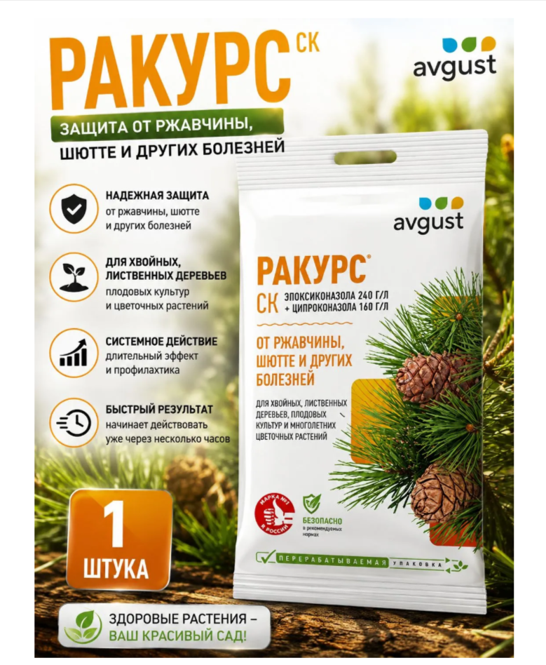

Ржавчина
Ржавчина на туе — это грибковое заболевание. На хвое появляются рыже-коричневые пятна. Со временем поражённые участки темнеют, хвоя засыхает и опадает.
.webp)
Почему появилась? Грибок активнее развивается, когда туя ослаблена. Вот частые провоцирующие факторы:
- Стресс: недавняя пересадка, засуха, солнечные ожоги, подмерзание зимой.
- Неправильный уход: застой воды (заболоченность) или, наоборот, долгое отсутствие полива; слишком плотная посадка, из-за чего плохо циркулирует воздух.
- Дефицит питания: особенно критичны нехватка калия и фосфора — растению просто не хватает сил на борьбу с инфекцией.
- Наличие соседа-переносчика: иногда промежуточные хозяева (некоторые лиственные или плодовые деревья — яблоня, груша, боярышник) становятся источником спор.
Что делать? Нужен системный подход. Рекомендую действовать по шагам:
1. Санитария. Безжалостно обрежьте сильно поражённые, рыжие и сухие ветки. Режьте острым секатором с запасом 5–10 см в сторону здоровой ткани — так вы гарантированно удалите мицелий гриба, который мог проникнуть глубже видимой зоны. После каждого среза дезинфицируйте инструмент (спиртом или специальным средством), чтобы не разнести инфекцию. Срезы толще карандаша замажьте садовым варом или специальной пастой (например, «РанНет»).
Важно: все срезанные ветки и опавшую хвою под деревом тщательно соберите и сожгите. Не кладите их в компост — так вы создадите рассадник спор.
2. Обработка фунгицидами. Выбор зависит от ситуации:
- Ранней весной (до распускания почек на лиственных деревьях) проведите искореняющую обработку медьсодержащими препаратами («Бордоская смесь», «ХОМ», «Абига-Пик») — чтобы уничтожить перезимовавшие споры.
- Летом, если болезнь проявилась, проведите курс системными фунгицидами («Топаз», «Раёк», «Ракурс»). Нужно 2–3 обработки с интервалом примерно 10–14 дней, чтобы подавить развивающуюся грибницу.
- Поздней осенью (после листопада) сделайте ещё одну искореняющую обработку медьсодержащими средствами — чтобы лишить гриб возможности комфортно перезимовать.
Также можно использовать биофунгициды (например, «Фитоспорин-М»), но учитывайте: они работают при определённых температурах.

Нажмите на фото — откроется страница препарата на Озоне
При обработке используйте прилипатель «Липосам» — он помогает препарату удерживаться на хвое и ветвях и не смываться дождём.

Нажмите на фото — откроется страница препарата на Озоне
3. Поддержка иммунитета. После обрезки и обработки помогите туе восстановиться. Осенью внесите под корень фосфорно-калийные удобрения (например, монофосфат калия или специальное «Осеннее») — это укрепит корни и повысит зимостойкость. Азотные удобрения осенью противопоказаны: они спровоцируют рост молодых побегов, которые не успеют вызреть до морозов и ослабят растение.
Чего избегать (типичные ошибки):
- Разовая обработка. Гриб не уничтожить за один раз. Одна обработка лишь временно подавляет инфекцию. Нужен системный курс.
- Игнорирование сообщников. Если рядом есть другие растения-переносчики, обрабатывайте и их в радиусе 10–15 метров.
- Пренебрежение агротехникой. Даже сильные препараты не сработают, если условия для туи остаются неблагоприятными (загущенность, неправильный полив, дефицит питания).
Профилактика. Чтобы снизить риск рецидива, следите за условиями выращивания: обеспечьте туе хороший дренаж, не загущайте посадки, регулярно осматривайте растения, своевременно подкармливайте.
.webp)